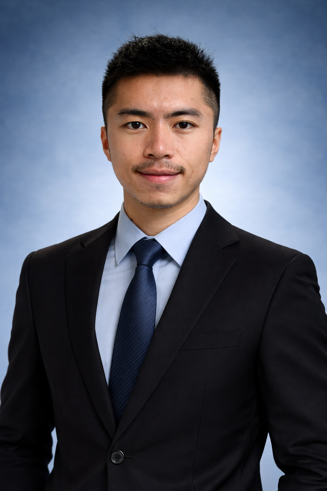

Who is Jiali Sheng?
About Me

I am from China and now live in Seattle. Seattle is my favorite city on the planet so far! I like to run, cook, go to the gym, hike, listen to music, and watch movies!
Education
I earned my Bachelor of Arts degree in Economics from the University of Washington. Studying economics has given me a different perspective on how the world works through the lens of money and resources. After graduating from UW in June 2025, I began a new chapter at Northeastern University in Seattle. I am currently pursuing a Master of Science in Computer Science and am interested in exploring interdisciplinary career opportunities at the intersection of economics and computer science.
Experience
During my undergraduate studies at UW, I had two part-time on-campus jobs. My first role was as a Student Coordinator in a campus dining hall, where I enjoyed working with people from diverse academic and cultural backgrounds. My second job was as a Student Specialist at UW Libraries. Through that experience, I learned the importance of reliable software systems and how they can support accuracy and efficiency when managing a large volume of daily updates.